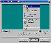

|
|
| 当前位置：电脑报电子版 > 1999 年 > 49 期 > 软件世界 > 超级秘书： XReminder |
| 《 超级秘书： XReminder 》 |
| 忙碌的工作是否使你觉得自己有点健忘症？ 手机忘了交费…… 老婆生日忘了…… 又忘了看本周的《足球之夜》…… 重要的约会…… 别以为我在向你推销“商务通”，你为什么不使用XReminder呢？有了它随时的提醒，你再也不会错过每一个重要时刻。 XReminder的设计是如此体贴，无需研究帮助就可轻松上手，而且对像我这样的囊中羞涩之辈更是考虑得体贴入微，早已准备好了免费的晚宴——功能略有简化但并不显寒酸的XReminder Light，而你如果腰包鼓鼓，你就可以购买一道色香味俱佳的豪华大菜：XReminder Pro。 XReminder启动后常驻于系统托盘处，并可以设置多个包含有文本、短语等提醒时间，只要时间一到XReminder便弹出提醒框，并可播放事先设置好的WAV或MIDI文件来提醒你哪些事该去处理了。设置XReminder只需双击系统托盘处的图标，在弹出的主窗口中选择“Event－>New”，选择你所需增加的事件提醒类型，在XReminder Pro中，可选择的事件类型有提醒、付费、电视节目、旅行、约会、生日、节日、上网、打电话等类型，并有各自的图标及显示颜色，你更可以创建自己所需的事件类型。 选择好事件类型后，XReminder会弹出一个创造新提醒的选项对话框，在此你可输入事件提醒的名称、内容、开始的时间，持续时间，弹出提醒框的时间，在XReminder Pro还可设置提醒框弹出时伴随的声音，可选择WAV或MIDI文件来进行声音提醒。 最后一项，也是XReminder最具特色的一项，选择提醒的循环周期，可设置为每天提醒、每周提醒、每月提醒、每年提醒四种类型，比如周四的《足球之夜》就可设置为每周提醒，而XReminder Pro则有更细微的设置。 设置好了事件提醒，在“Tools→Preferences”下选中“Load program on startup”，则每次启动Windows 95时自动加载XReminder，启动后，XReminder平时只会静悄悄地停留在系统托盘中，在设定的提醒事件的时间将到之前，弹出提醒框提醒你该做应该做的事情了，你此时可选择接受，代表你将去做所提醒的事了，该提醒事件将不会再弹出提醒框，或者选择“Snooze”，XReminder将在你设定的若干时间后再次提醒你，直到选择接受为止。 不是我不愿浪费笔墨，说实在的，XReminder就是这么简单。相信我，没错的，XReminder绝对会让你一见钟情、爱不释手。下载地址：http://www.PIMplus.com/xreminder/index.html。 （江西 萧艺） |
| 下载本期推荐软件 | 页 首 |
| CPCW网站版权所有，电脑报网站编辑部设计制作发布 |